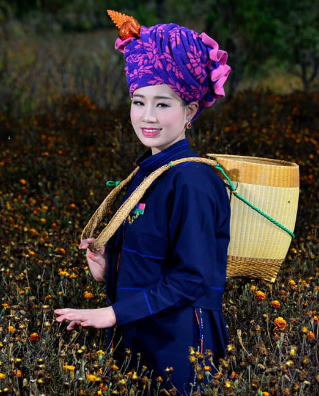

Pa'O people
The Pa'O (Burmese: ပအိုဝ်းလူမျိုး, IPA: [pəo̰ lùmjóʊ], or တောင်သူ; Shan: ပဢူဝ်း;Eastern Poe Karen|တံင်သူ; S'gaw Karen: တီသူ; also spelt Pa-O or Paoh) are the seventh largest ethnic nationality in Burma, with a population of approximately 1,800,000[1] to 2,000,000.[2] Other name of Pa-O is PaU, PhyaU, Piao, Taungthu, Taungsu, Tongsu and Kula.
Contact Us